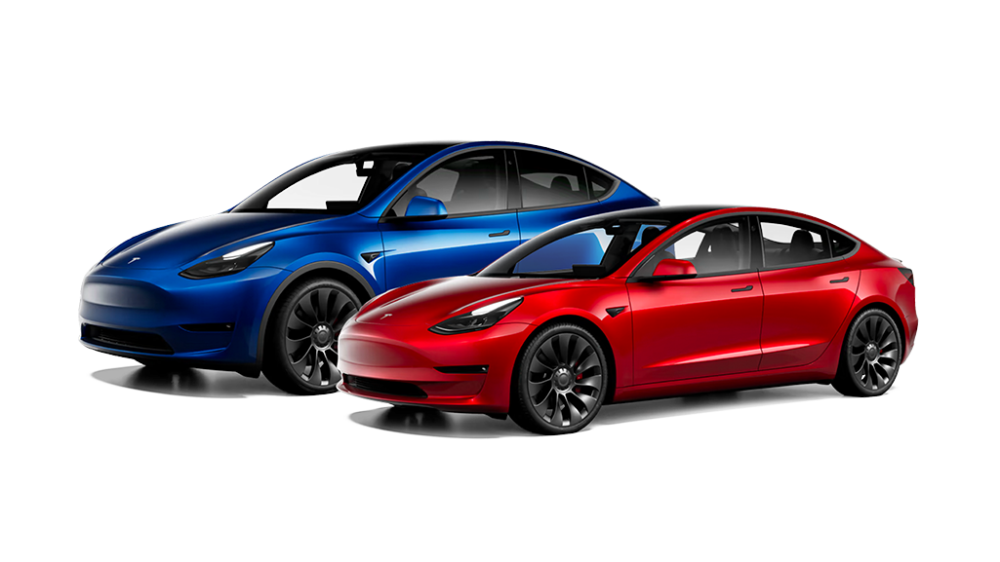

about
Tesla’s influence extends beyond automotive and energy products; the company is a significant player in the broader conversation on environmental responsibility and the advancement of clean technology. As Tesla continues to push the boundaries of what’s possible, it plays an increasingly central role in shaping the future of transportation and energy consumption worldwide.
Tesla’s manufacturing footprint has expanded globally, with Gigafactories in several regions, including the United States, Shanghai, Berlin, and anticipated further expansion. These factories are designed to be as environmentally friendly as possible and are built to scale up production to meet the growing demand for Tesla products. In terms of market presence, Tesla has disrupted the automotive sector with a direct-to-consumer sales model, bypassing traditional dealership networks. This revolutionary approach, coupled with its proprietary Supercharger network, has established Tesla not just as a car manufacturer but as an icon of innovation in the era of sustainable technology.